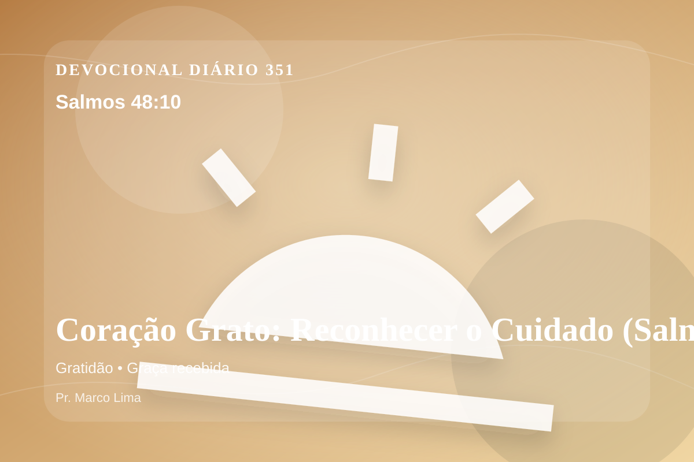

Coração Grato: Reconhecer o Cuidado (Salmos 48:10)
Conforme o teu nome, ó Deus, assim é o louvor a ti, até os confins da terra; tua mão direita está cheia de justiça.
Pensamento
Aqui, o convite é perceber como Deus sustenta a caminhada quando a fé é provada no cotidiano. Salmos 48:10 coloca diante de nós uma verdade capaz de atravessar a rotina, confrontar o coração e renovar a esperança em Deus.
Salmos 48:10 chama o coração a ouvir Deus com reverência e responder com fé prática. A Palavra não foi dada para enfeitar pensamentos religiosos, mas para conduzir pessoas reais ao Senhor.
O tema de gratidão precisa ser recebido com simplicidade e seriedade. O Senhor não usa esta passagem para alimentar vaidade espiritual, mas para formar obediência sincera. A gratidão bíblica desloca a atenção da falta para a fidelidade de Deus. Ela não nega a dor, mas ensina a reconhecer a presença e a bondade do Senhor mesmo em dias difíceis.
Não transforme este devocional em informação religiosa. Pare por alguns instantes, nomeie diante de Deus aquilo que precisa mudar e peça um coração pronto para obedecer.
Arrependimento não é apenas sentir peso na consciência; é voltar-se para Deus, abandonar o caminho que entristece o Senhor e confiar que a graça de Cristo é suficiente para perdoar e transformar.
Este é o evangelho que sustenta toda aplicação: Jesus Cristo morreu pelos pecadores, ressuscitou em vitória e chama cada pessoa a responder com fé, arrependimento e uma vida rendida ao Seu senhorio.
O simples evangelho de Cristo Jesus continua sendo suficiente: arrependa-se, creia, receba perdão e caminhe em obediência pelo poder do Espírito Santo.
Não espere sentir tudo para obedecer. Comece com fidelidade no próximo passo, confiando que Deus sustenta quem responde à Sua voz.
Para Praticar Hoje
- Leia Salmos 48:10 lentamente e destaque uma palavra ou expressão central do texto.
- Confesse a Deus um pecado, resistência ou frieza espiritual que esta Palavra revelou.
- Declare sua fé em Jesus Cristo e pratique hoje uma atitude concreta de arrependimento e obediência.
Oração
Senhor, eu quero viver com um coração grato. Salmos 48:10 me lembra de todos os benefícios do Senhor que perdoa, sara e sustenta. Que a gratidão seja o tom da minha vida. Ajuda-me a viver essa Palavra com sinceridade.
{kind=link}